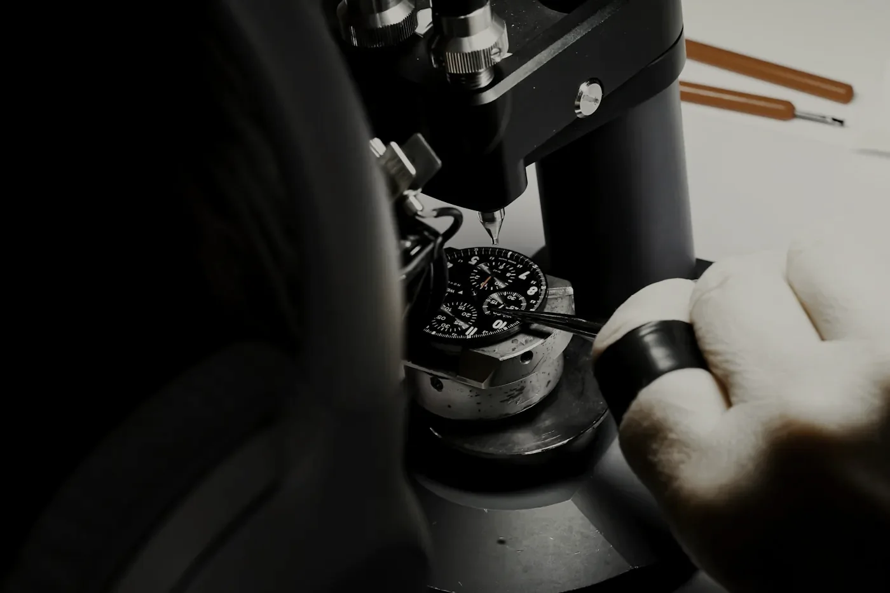
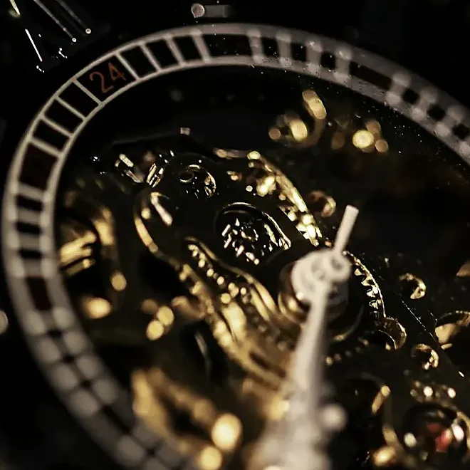
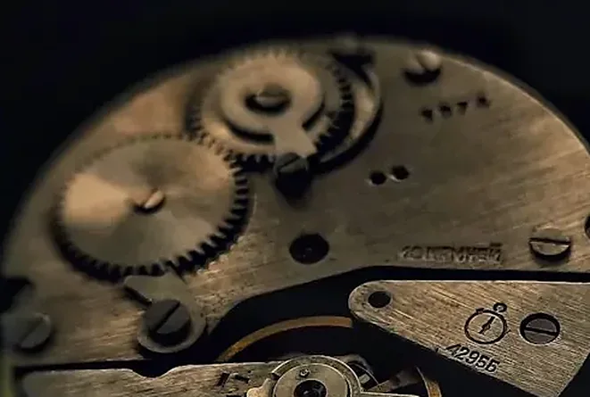
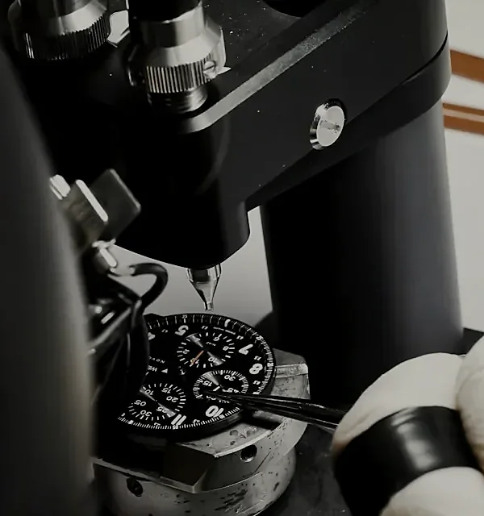
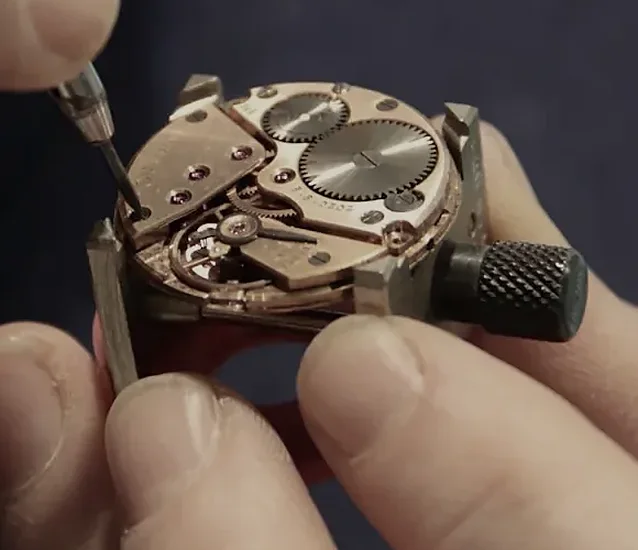
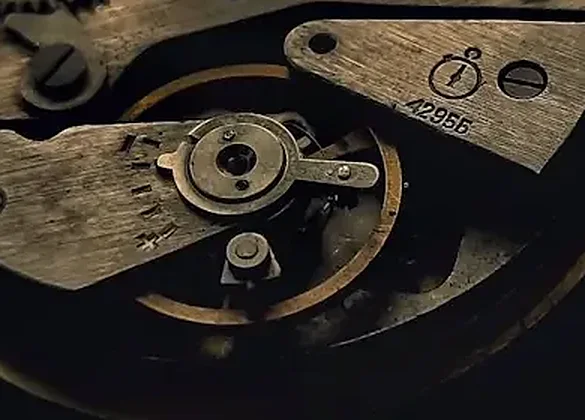
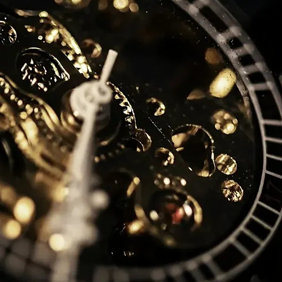

Bench 01North window
Aline Vuilleumier
Timing and regulation. Takes every movement through its five positions and signs off the rate before the case is closed.
- At the bench
- 15 years
- Since
- 2011
- Movements signed
- 611

Fig. 1Bench 04, a little after ten. The press is calibrated to forty grams.
The farmhouse was built in 1884 and made watch cases until 1971. We took the first floor in 2011, and the second in 2016. Nothing in it is large except the windows.
(01)The six benches
Six people, six benches, and a rule: one watchmaker builds a calibre from the bare plate to the signed bridge. Each also carries one thing for the whole house, the job they would otherwise be fighting the others for.
Bench 01North window
Timing and regulation. Takes every movement through its five positions and signs off the rate before the case is closed.
Bench 02North window
The going train and the escapement. Sets the depthing of the pallet fork by eye, then proves it by ear.
Bench 03Stove side
Barrel, mainspring, winding and setting work. The one who knows exactly how many turns forty feels like.
Bench 04Stove side
Dials, indices and hands. Fits the case, the crystal and the crown, and checks that nothing touches the lacquer.
Bench 05Long table
Bridge finishing: perlage, Côtes de Genève and the chamfer that runs round every edge at forty-five degrees.
Bench 06Long table
Cleaning and oiling, and the first look at every Meridian that comes home for service.
(02)A weekday
The benches are lit Monday to Friday. This is an ordinary Wednesday, as written down by the people who were there.
The north windows are opened before the lamps are lit. Pegwood is whittled, benches wiped, the stove is fed. Aline reads the thermometer and the hygrometer aloud, and writes both in the book.
The room · 21 °C, 50 % humidity
The hardest work is done while the building is quiet: setting the train bridge, closing the barrel, seating the escape wheel. No one speaks, and the radio is kept off, though no one remembers deciding that.
Benches 01 – 03
Ten minutes at the long table. The rule is that nobody talks about watches. The rule has not been kept since 2011.
Long table
Léa seats indices with the press, forty grams, one at a time. Seconds hands are fitted last, under the loupe, and checked against the minute track at every five.
Bench 04
The benches are covered with linen and the lamps switched off. Lunch comes from the farm kitchen, and usually involves Comté.
Kitchen
Movements on day four, nine, seventeen. Each is laid in five positions in turn, and the rate is written by hand on a sheet that follows it for the full twenty-one days.
Timing room · 14 movements
Samuel oils the movements that will close that week: seventeen jewels, the pallet stones, the barrel. A drop is drawn from the oiler and put where it is needed. The drop is about the size of a full stop.
Bench 06
Every movement is opened again by a watchmaker who did not build it. If they find nothing they say nothing, and it goes on. If they find something, it goes back to the bench it came from.
Second inspection
The barrel bridge is engraved with the watchmaker’s initials and the movement’s number. It is the last thing that happens to a calibre before the caseback, and it is done freehand.
Benches 01 – 06
Tools are counted into the drawers. Movements go into the safe. The stove is banked. The last person out turns the key and checks the windows twice.
The farmhouse
(03) The rule
Nothing leaves the building that has not been looked at by someone who did not make it.
(04)Index of materials
(05)At the bench
Photographed on ordinary days, at the benches where the work was happening. Nothing is arranged. Some of it is out of focus because the watchmaker did not stop.






(06)Visits
Visits are by appointment, Tuesday to Thursday, 10:00–16:00. Six people, two hours, no shop. You will be given a coffee and a loupe, and the benches will go on working around you.
How we look after a watch